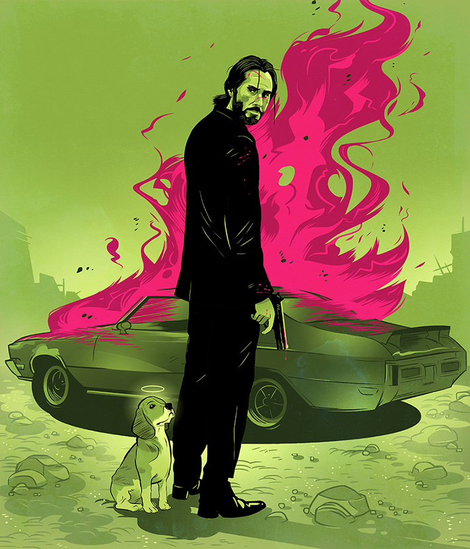
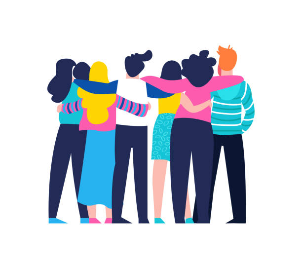
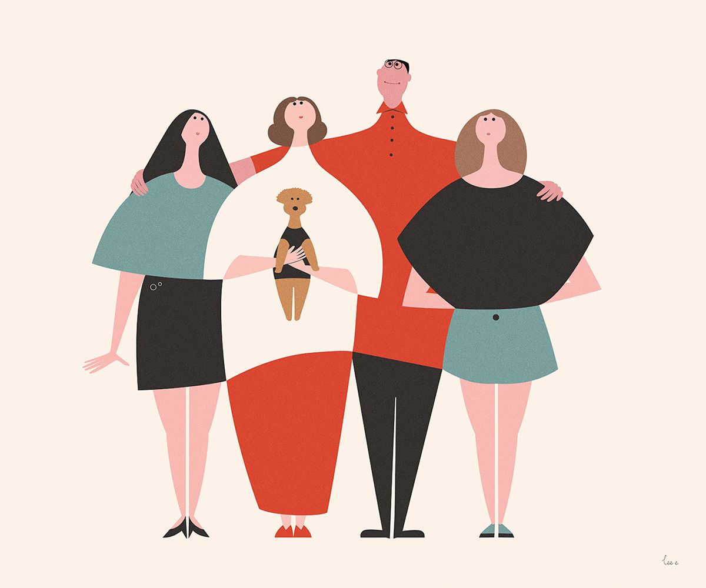

A Lost Cause
By Christopher Graham
In the begining I wasn't always like this not the drunk pathetic man you may see, I was a husband, I was a father, I was a son. Everything changed when I borrowed money from the Mafia they destroyed my life and drove everyone away from me. all they do is take but one thing they can not take is my pride to fight back.

This is only the begining.... but wait I haven't introduced myself my name Nic and I have secret I've lived seprate life that my family doesn't know. which looking back also landed me at war with Mafia. So lets start from the begining...... In the military I was a apart of a 'special' devision known as Kobra. We were a small devision but we were the best at what we did. For a group of contracters we were one big happy family.

Well 2 years later I left the life as a soldier and pursude other things. The life of constantly fighting has gotton to me. After many wars I now suffer from PTSD, whenever I see blood I automaticaly remeber the smell of death in the air as if I'm at that day again. I don't have the will to fight anymore, but lucky for me a year later I found someone who's helping me deal with my PTSD. 8 years has passed I'm a father of two crazy kids and a super engergetic dog (huskey). My wife is by my side, this is the happiest momment of my life..... Until it was taken away from me.

After a couple years life was a little rough I lost my job due to reasons, and out of desperation I turned for help from the Russian Mafia. I know I was stupid but I desperately needed the money. I was in deep deep deep debt and I couldn't pay the money back. this led to me pushing everyone away including my wife and my kids. All thats left beside me is my huskey and my incredible debt. I wish I could turn back time and go back to life when it was simpler. 2 months later I found out that the Russian Mafia have a strange Amulet that can take a person back in time but it can only be used once it's obvious a joke but I'm desprate. It looks like I have return to the life that once dreaded to take my life back. The amulet is being held at a casino. In the back of the casino there are two heavily guarded men I have two options I could go in gun blazing or I could go sneak through the vets?